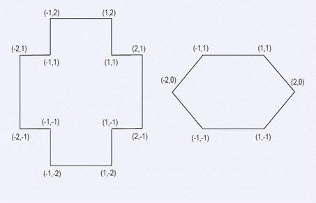

输入的第一行包含一个正整数t(1<=t<=10)，为多边形的边数。接下来，为t个多边形的描述，每个描述的第一
行为一个正整数n(3<=n<=100000)，表示了多边形的点数。然后在后面n行每行两个整数x和y(?100000000<=x, y<=1
00000000)，依次表示多边形的顶点坐标。多边形不一定是凸的，但是不自交——任何两条边都只有最多一个公共
点——他们的公共端点。此外，没有两条连续的边平行。
FGD小朋友——一个闻名遐迩的年轻数学家——有一个小MM，yours。FGD小朋友非常喜欢他的MM，所以他很乐
意帮助他的MM做数学作业。但是，就像所有科学的容器一样，FGD的大脑拒绝不停地重复思考同样的问题。不幸的
是，yours是一个十分用功的学生，所以她不停地让FGD帮助她检查她的作业。一个阳光明媚的周末，yours的数学
老师布置了非常多的寻找多边形的对称轴的题，足够她做相当长的一段时间了。在此之前FGD已经决定去海边度过
这个难得的假期，不过他还是觉得应该帮助他的MM对付可爱的数学作业。很快地，他找到了解决方案，最好写一个
程序来帮助yours检查她的数学作业。因为FGD并非一个计算机科学家，所以他找到了他的好朋友你，请你帮助他完
成这个任务。请写一个程序：读入多边形的描述计算出每个多边形的对称轴数将计算的结果输出
输入的第一行包含一个正整数t(1<=t<=10)，为多边形的边数。接下来，为t个多边形的描述，每个描述的第一
行为一个正整数n(3<=n<=100000)，表示了多边形的点数。然后在后面n行每行两个整数x和y(?100000000<=x, y<=1
00000000)，依次表示多边形的顶点坐标。多边形不一定是凸的，但是不自交——任何两条边都只有最多一个公共
点——他们的公共端点。此外，没有两条连续的边平行。
你的程序应该输出正好t行，第k行包含了一个整数nk——表示第k个多边形有多少个对称轴。
2
12
1 -1
2 -1
2 1
1 1
1 2
-1 2
-1 1
-2 1
-2 -1
-1 -1
-1 -2
1 -2
6
-1 1
-2 0
-1 -1
1 -1
2 0
1 1
4
2